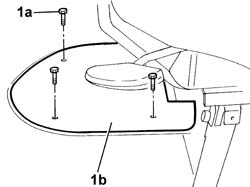
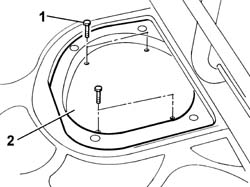
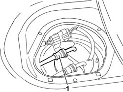
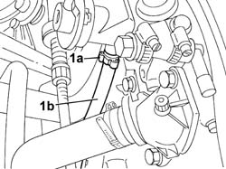
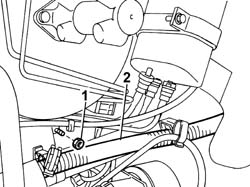
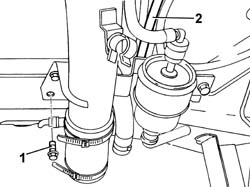

1040B52 FUEL RETURN LINE - R R
- Path
- Procedures > 10 ENGINE UNIT > 1040 FUEL TANK AND PIPES > 1040B FUEL SUPPLY/RETURN CIRCUIT PIPE > 1040B52 FUEL RETURN LINE - R R
- Kind
- repair procedure (removal / refitting; the operation number is the code)
- Applies to
- engines: 2.0 16V; all production periods
- Interactive page
- https://sloeber94.github.io/elrnDB-fDct/en/#/244000743
Applies to: engines: 2.0 16V; all production periods
 Removing
Removing
 Refitting
RefittingSee in Op. 1048A21
Op. 1048A39 SLEEVE FROM AIR CLEANER TO RIGID PIPE - R R
- Position the vehicle on the lift.
1. Undo the fixing bolts (1a) and remove the passenger compartment carpet (1b) illustrated.

Applies to: engines: 2.0 16V; all production periods
1. Undo the fixing bolts.
2. Remove the protective cover for the submerged pump housing.

Applies to: engines: 2.0 16V; all production periods
1. Disconnect the fuel return pipe rapid connector.

Applies to: engines: 2.0 16V; all production periods
1. Acting on the band (1a), release the return pipe from the single manifold (1b) and release it from the retaining springs.

Applies to: engines: 2.0 16V; all production periods
1. Undo the upper filler fixing bolt.
2. Move the filler aside.

Applies to: engines: 2.0 16V; all production periods
Op. 7055B54 UNDER-ENGINE GUARD - R R
1. Undo the lower filler fixing bolt.
2. Remove the fuel return pipe after having released it from the retaining springs.

Applies to: engines: 2.0 16V; all production periods
Refitting
Removing- Fit the fuel return pipe in place.
- Tighten the lower filler fixing bolt.
Op. 7055B54 UNDER-ENGINE GUARD - R R
- Tighten the upper filler fixing bolt.
- Fit the return pipe from the single manifold and restore the band removed previously.
- Connect the fuel return pipe rapid connector.
- Fit the protective cover for the subemerged pump housing and tighten the fixing bolts.
- Position the passenger compartment carpet and tighten the fixing bolts.
Op. 1048A39 SLEEVE FROM AIR CLEANER TO RIGID PIPE - R R
See in Op. 1048A21